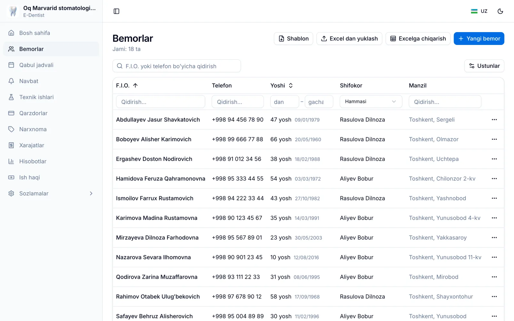
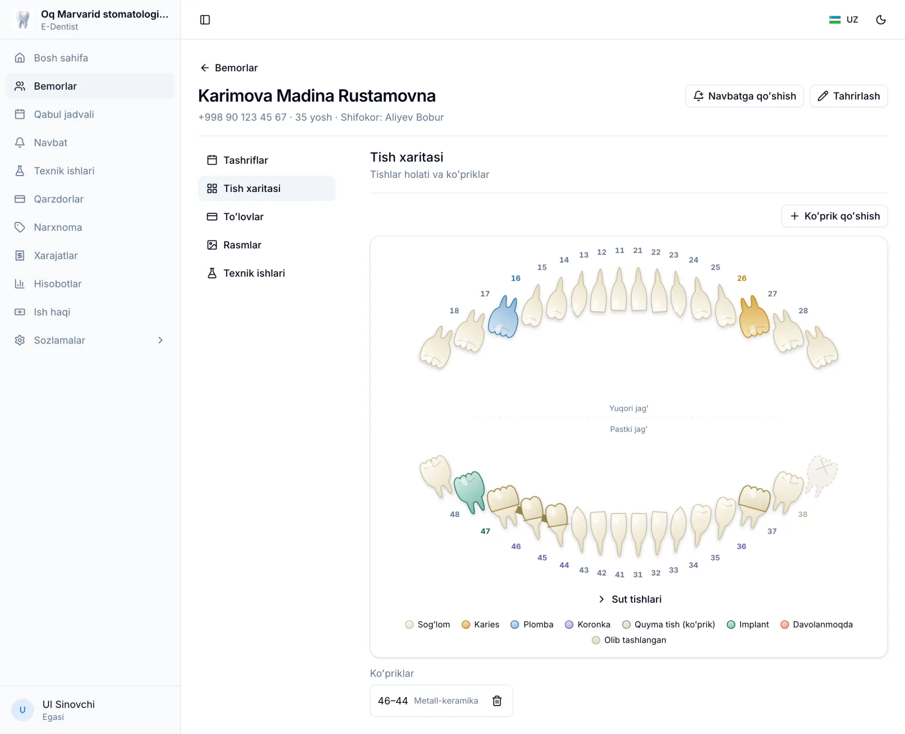
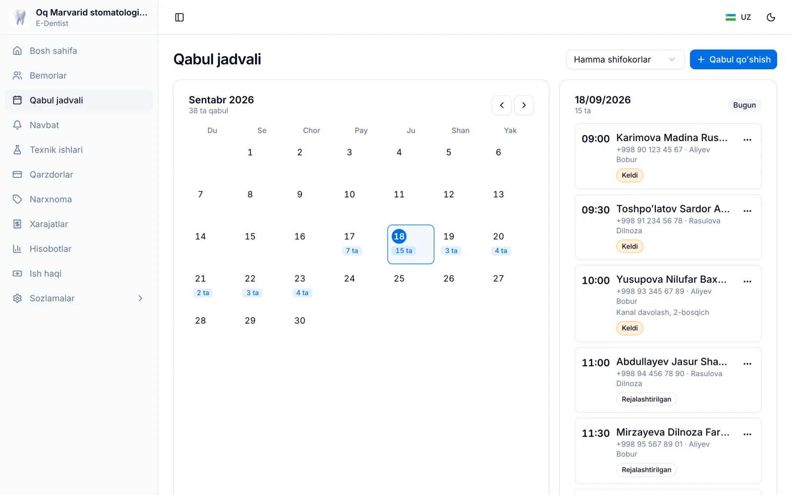
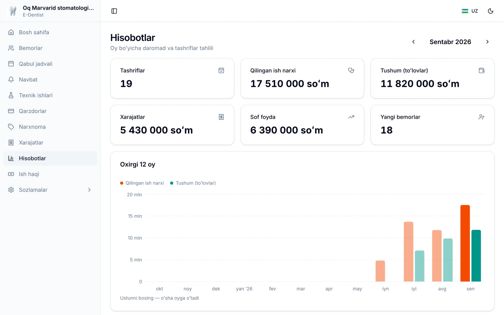

E-Dentist Bulut · stomatologiya CRM
Stomatologiya klinikasi uchun dastur — brauzerda.
Oʻrnatish shart emas. Bemorlar kartotekasi, tish xaritasi, qabul jadvali, QR navbat, toʻlovlar, xodimlar va ish haqi — bitta manzilda, kompyuterda ham, telefonda ham.
Roʻyxatdan oʻtish 2 daqiqa · Karta soʻralmaydi · Oʻzbek va rus tillari
Holatni tanlang va tishni bosing — dasturdagidek ishlaydi.
Kundalik ishning hammasi bir joyda
Daftar, Excel va telefon eslatmalari oʻrniga — bemorning elektron kartasi: tashriflar, tish xaritasi, rasmlar, toʻlovlar bir joyda. Qabulxona yozgan qabulni shifokor darhol koʻradi — tish shifokori, administrator va texnik bitta bazada ishlaydi.
Bemorlar va tashriflar
Ism, telefon, yoshi va manzil boʻyicha qidiruv. Har bir bemorda tashriflar tarixi, toʻlovlari, rentgen rasmlari va biriktirilgan shifokori.
- Har bemorga oʻz shifokori — tashrif va qabulda oʻzi tanlanadi
- Narxnomadan tanlab tashrif yozish, tish raqami bilan
- Rentgen va boshqa rasmlarni biriktirish
- Bemorlarni Excel dan yuklash va Excel ga chiqarish

Tish xaritasi
Xalqaro FDI raqamlashida odontogramma. Tishni bosasiz — holatini, koronka materialini va izohni yozasiz. Koʻprik tayanch va oraliq tishlari bilan chiziladi.
- Karies, plomba, koronka, implant, davolanmoqda, olib tashlangan
- Koronka materiali: keramika, metall-keramika, sirkoniy, metall, plastmassa
- Koʻprik (quyma tish) — tayanch va oraliq tishlar bilan
- Bolalar uchun alohida sut tishlari xaritasi

Qabul jadvali
Oylik kalendarda kim qachon kelishi koʻrinadi — shifokor boʻyicha alohida. Bosh sahifada bugungi qabullar turadi.
- Qabulxona yozadi, shifokor oʻz jadvalini koʻradi
- Keldi · kelmadi · bekor qilindi belgilari
- Yakunlash — qilingan ish darhol tashrif sifatida yoziladi, narxi bilan
- Bemorni kartochkadan toʻgʻridan-toʻgʻri bugungi navbatga qoʻshish

Toʻlovlar, qarzdorlar va hisobot
Har tashrifning narxi bemor hisobiga tushadi, toʻlov qabul qilinadi, qolgani — qarz. Oy yakunida tushum, xarajat va sof foyda bir sahifada.
- Qarzdorlar roʻyxati — kim qancha qarz, oxirgi toʻlovi qachon
- Xarajatlar turkumlar boʻyicha: materiallar, ijara, texnik ishlari, ish haqi
- 12 oylik grafik: qilingan ish narxi va tushum
- Butun maʼlumotni istalgan payt Excel ga yuklab olish

Butun klinika uchun — har kim oʻz ishini koʻradi
Bitta hisob emas, jamoa: har xodim oʻz elektron pochtasi bilan kiradi, roli nimani koʻrsatishni belgilaydi.
5 ta tayyor rol
Egasi · Shifokor · Qabulxona · Texnik · Kuzatuvchi. Har rolning ruxsatlarini oʻzingiz oʻzgartirasiz: kim toʻlovni koʻradi, kim xodim qoʻshadi.
Shifokor faqat oʻzinikini koʻradi
Jadvalda oʻz qabullari, hisobda oʻz ishlari va ulushi. Boshqa shifokorning bemori va daromadi unga koʻrinmaydi.
Ish haqi oʻzi hisoblanadi
Shifokorga qilingan ish narxidan foiz, qolganlarga oylik — ikkalasi birga ham boʻladi. Oy yakunida «toʻlab berish» xarajatga tushadi.
Texnik ishlari (naryadlar)
Koronka, koʻprik, protez — texnikka naryad yoziladi, u oʻz hisobidan holatini belgilaydi: berildi → tayyor → topshirildi. Texnik narxi xarajatga tushadi.
Maʼlumot himoyalangan va sizniki
Bemor maʼlumoti — tibbiy maʼlumot. Tizim boshidanoq shunga qarab qurilgan.
Har klinika alohida
Klinikalar bir-birining bemorini koʻra olmaydi — chegara bazaning oʻzida oʻrnatilgan, ilova xatosi ham uni ochib yubormaydi.
Ekranlarda ism yoʻq
Kutish xonasi ekrani va ochiq navbat sahifasida faqat raqamlar. Ismlar faqat kabinet ichida, xodimlarga koʻrinadi.
Har kuni zaxira nusxa
Baza va rasmlar har kuni avtomatik zaxiralanadi. Kompyuteringiz buzilsa ham hech narsa yoʻqolmaydi — boshqa qurilmadan kirasiz.
Istalgan payt yuklab olasiz
Bemorlar, tashriflar, toʻlovlar, xarajatlar, xodimlar — hammasi Excel fayllarda bir zip boʻlib chiqadi. Maʼlumot qulflanmaydi.
Avval sinab koʻrasiz, keyin qaror qilasiz
Roʻyxatdan oʻtasiz va 14 kun toʻliq ishlatib koʻrasiz. Yoqmasa — hech narsa toʻlamaysiz.
1 · Roʻyxatdan oʻtish — 2 daqiqa
Klinika nomi, elektron pochta va parol. Karta raqami soʻralmaydi. Pochtaga tasdiqlash xati keladi — tamom, kabinet ochiq.
2 · 14 kun bepul
Barcha boʻlimlar ochiq, hech biri cheklanmagan. Xodimlaringizni qoʻshasiz, bemorlarni Excel dan yuklaysiz — real ishda sinab koʻrasiz.
3 · Oylik obuna
Sinov yoqsa, Telegramda yozasiz — narxni aytamiz, toʻlovni qabul qilamiz, muddat uzaytiriladi. Ish toʻxtagan joyidan davom etadi.
4 · Maʼlumot oʻchmaydi
Sinov tugasa ham kiritgan bemorlaringiz joyida qoladi. Obuna boʻlganingizda hamma narsa oʻz oʻrnida turadi.
Tez-tez soʻraladigan savollar
Biror narsa oʻrnatish kerakmi?
Yoʻq. Brauzerda cabinet.e-dentist.uz ga kirasiz — Windows, Mac, planshet yoki telefon, farqi yoʻq. Hamma qurilmada bir xil maʼlumot: qabulxona kompyuterda yozgan qabul shifokorning telefonida koʻrinadi.
Internet uzilsa nima boʻladi?
Dastur internet bilan ishlaydi — telefon interneti ham yetadi. Aloqa uzilsa yozilgan maʼlumot yoʻqolmaydi, ulanish qaytgach davom etasiz.
Maʼlumotlar qayerda saqlanadi, kim koʻradi?
Himoyalangan serverda, shifrlangan aloqa orqali. Har klinikaning maʼlumoti alohida — boshqa klinika, hatto tizim xatosi bilan ham, sizning bemorlaringizni koʻra olmaydi. Klinika ichida esa kim nimani koʻrishini rollar orqali oʻzingiz belgilaysiz.
Nechta xodim va qurilmada ishlata olaman?
Qurilma cheklanmagan. Har xodimga oʻz hisobi ochiladi — shifokor, qabulxona, texnik, buxgalter — va har biri oʻz roli doirasida ishlaydi.
Bemorlarim Excel da. Koʻchirib boʻladimi?
Ha. «Bemorlar» boʻlimida shablonni yuklab olasiz, ustunlarga toʻldirib qaytarib yuklaysiz — tizim xatolarni koʻrsatadi, toʻgʻrilarini kiritadi. Takrorlangan bemorlar bilan nima qilishni oʻzingiz tanlaysiz.
Oflayn E-Dentist dasturidan foydalanardim. Bu oʻsha dasturmi?
Bu yangi, onlayn versiya — butun klinika uchun, bitta kompyuter uchun emas. Oflayn dasturdagi bemorlar roʻyxatini Excel orqali koʻchirish mumkin. Savolingiz boʻlsa Telegramda yozing.
Sinov tugasa bemorlarim oʻchadimi?
Yoʻq. Maʼlumot joyida qoladi, kabinet obuna boʻlguncha vaqtincha yopiladi. Obuna boʻlganingizdan keyin hamma narsa oʻz oʻrnida.
Toʻlov qanday qilinadi?
Hozircha Telegram orqali: yozasiz, narxni aytamiz, toʻlovni qabul qilamiz va muddatni uzaytiramiz. Karta orqali avtomatik toʻlov keyinroq qoʻshiladi.
Rus tilida bormi?
Ha. Interfeys oʻzbek va rus tillarida — har xodim oʻziga qulayini tanlaydi. Bemorning navbat sahifasi ham ikki tilda.
Savolingiz qoldimi?
Roʻyxatdan oʻtishda yoki ishlatishda qiyinchilik boʻlsa — Telegramda yozing. Botga yozasiz, javobni jonli odam beradi.